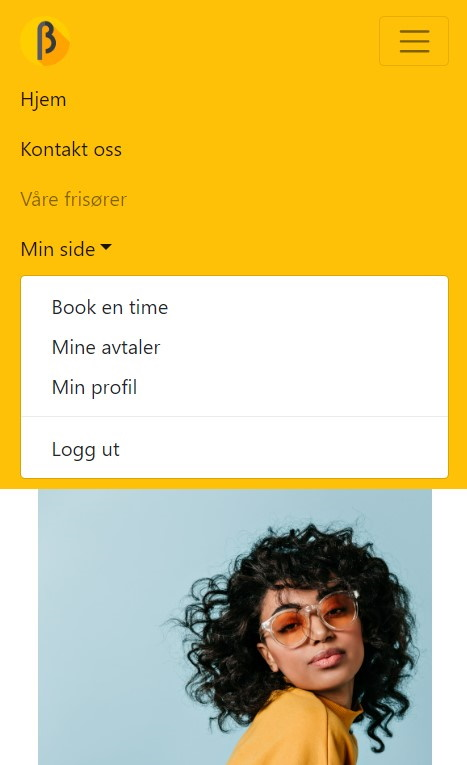

Betakrøll is a website for the hair salon Betakrøll.
Customers can:
I made a custom user model to the project in order to register users with their email in stead of
a username as login information. Also the user model can differentiate between customers, hairdressers and admin with
different levels of authorization.
Pics show the registration screen (containing all Django built in functionality, but custom fields) and how the logged
in menu is.

The app was developed in a team of 4 members through the spring of 2022. I made the loginfunctionality, user database model, and design of the page. The team worked mostly according to scrum with planning based on user stories, updates twice a week, 2 week sprints, retrospects, meeting minutes, GitLab as planning tool and repository, branching and merging and so on.